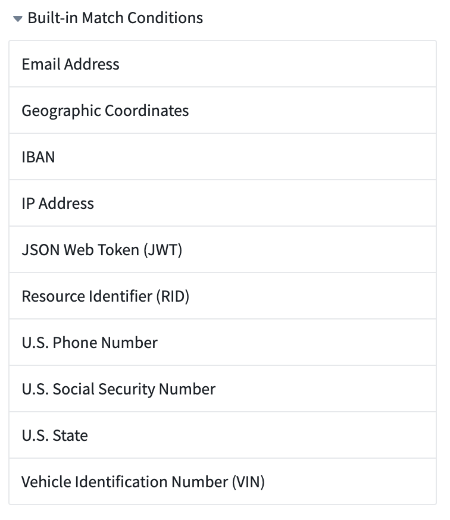
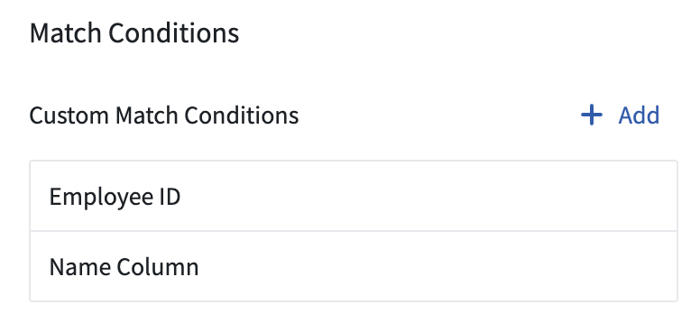
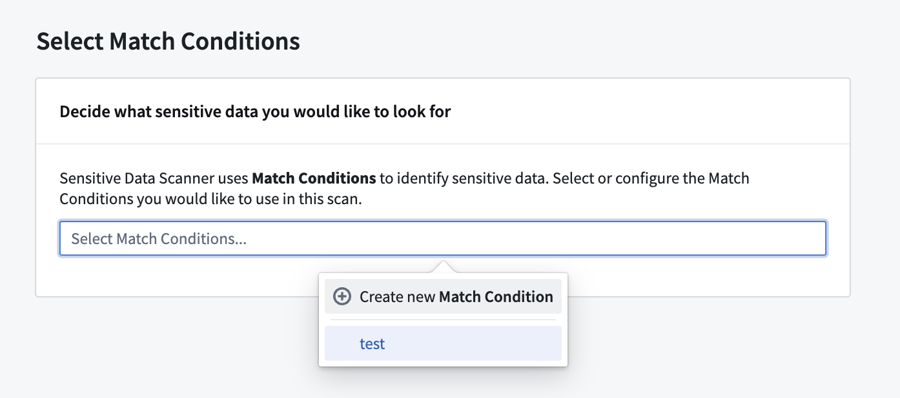
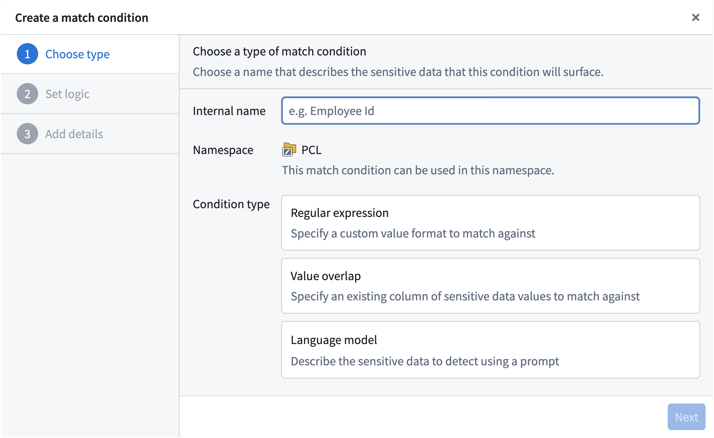
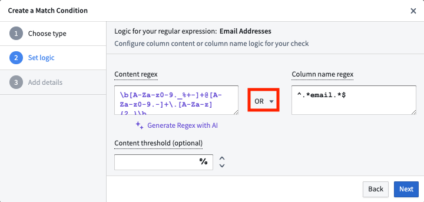
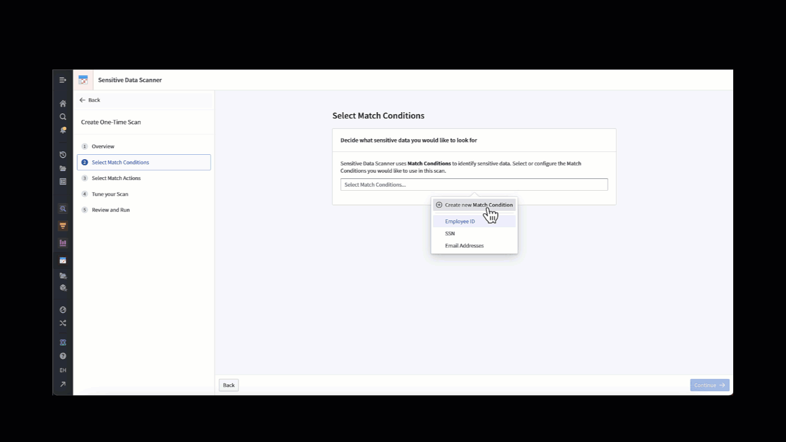
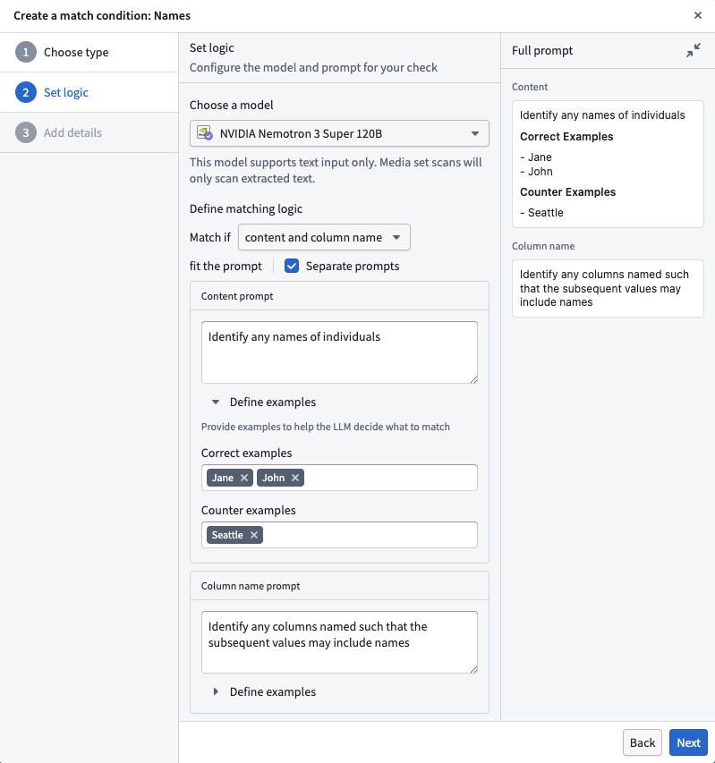
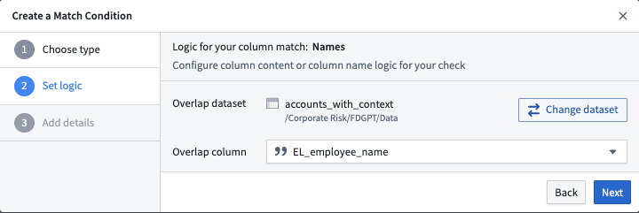

Sensitive Data Scanner comes with a set of built-in match conditions; you can also define your own custom match conditions to use with Sensitive Data Scanner.
Sensitive Data Scanner provides a range of built-in match conditions to detect common types of PII, such as Social Security numbers, e-mail addresses, or phone numbers. You can find these by selecting the arrow to expand the Built-in Match Conditions section in the right sidebar:

Built-in match conditions are designed to detect common types of personal data. However, their effectiveness varies based on your specific data structure and format. Ensure these conditions align with your unique data standards, potentially creating custom conditions as needed. Consult your data protection officer if you have further questions.
To create a custom match condition for your space, there are two ways to get started:
From the landing page, select Add above the Custom Match Conditions listed in the match conditions sidebar.

While creating a sensitive data scan, on the Select match conditions page, you can also create a new match condition and immediately use it in your scan by selecting Create new match condition.

Both of these starting points open the same match condition creation process. From there, you can choose whether to create a regex (Regular expression) match condition, a language model match condition, or an overlap (Value overlap) match condition.

When creating a regular expression (regex) match condition, there are two types of regex options you can specify; content regex and column name regex.
Sensitive Data Scanner allows you to combine these two regex options for maximum specificity:

The content regex contains an optional content threshold field in which you can specify a number greater than 0 and less than or equal to 100; this content threshold is the percentage of the cells in a particular column of a given dataset that must match the content regex in order for that dataset to be highlighted as a match. The content threshold field is optional. If no value is specified, Sensitive Data Scanner will highlight a dataset as a match if there is at least one match of the content regex.
If AIP is enabled for your enrollment in Foundry, you also have the ability to specify the content regex with the help of AI. You can do this with the Generate Regex with AI button. Selecting this button prompts you to describe the type of sensitive data to detect, for instance "all email addresses". It shows examples that match the proposed regex, then generates the regex for use in the application. The graphic below demonstrates this process.

Language model match conditions use an LLM to classify whether scanned data matches a natural language prompt. They are useful for sensitive data that is difficult to express as a regex or a fixed list of values.
To create a language model match condition, choose Language model as the condition type, select a model, and define the matching logic. You can configure the condition to evaluate:
Write a prompt that describes the sensitive data the model should detect. If you evaluate both content and column names, you can use the same prompt for both checks or define separate prompts. You can also add correct examples and counter examples to clarify what the model should and should not flag. Review the Full prompt preview before saving the match condition.

When you use a language model match condition in a scan, LLM usage is attributed to each scanned resource. Scans that evaluate all rows with language model match conditions can be slow and costly, so consider using a row subset when you do not need an exhaustive scan.
Overlap match conditions are useful when looking for sensitive data that cannot be distilled into regex. For example, it can be difficult to create a content regex to match names, although creating a column name regex can be sufficient in some instances. However, the overlap match condition can be useful if you already have a dataset with an exhaustive list of sensitive data that you want to scan for.
The screenshot below is an example of how to select a specific column. In this example, the EL_employee_name column of the accounts_with_context dataset is set as the overlap column to which we will match other data. If any cell in the overlap column matches any other cell in another dataset, that other dataset will be highlighted as a match for this match condition.
